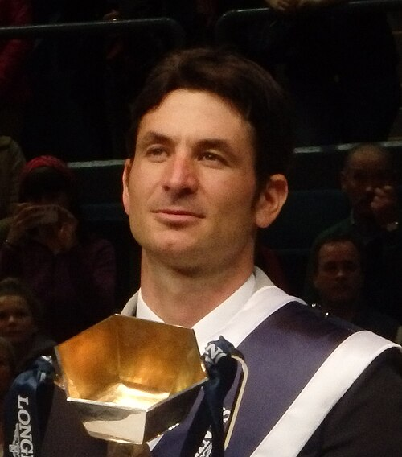
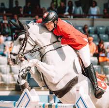
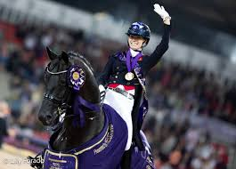

Nuestro equipo
Director del centro: Steve Guerdat

Steve Guerdat es un jinete olímpico que, tras retirarse de la competición, actualmente se dedica a dirigir este centro ecuestre. Con una larga trayectoria en el mundo de la equitación y gracias a su amplia experiencia en el sector, ha convertido el Centro Ecuestre Laura Gonzalo en un centro de referencia de la hípica a nivel nacional.
Entrenador de Salto de obstáculos

Martin Fuchs es un jinete suizo que compite en la modalidad de salto ecuestre. Es hijo del jinete Thomas Fuchs. Ganó una medalla de plata en el Campeonato Mundial de Saltos Ecuestres de 2018 y cinco medallas en el Campeonato Europeo de Saltos Ecuestres entre los años 2015 y 2021. Compagina la competición internacional con el entrenamiento de futuras promesas de la hípica española.
Entrenadora de Doma Clásica

Charlotte Fry es una amazona británica que compite en la modalidad de doma. Es hija de la amazona Laura Fry. Participó en dos Juegos Olímpicos de Verano, obteniendo tres medallas de bronce, una en Tokio 2020 en la prueba por equipos y dos en París 2024, individual y por equipos. Al igual que Martin Fuchs, Charlotte Fry también compagina la competición internacional con la formación en la disciplina de Doma Clásica de futuras promesas de la hípica española.